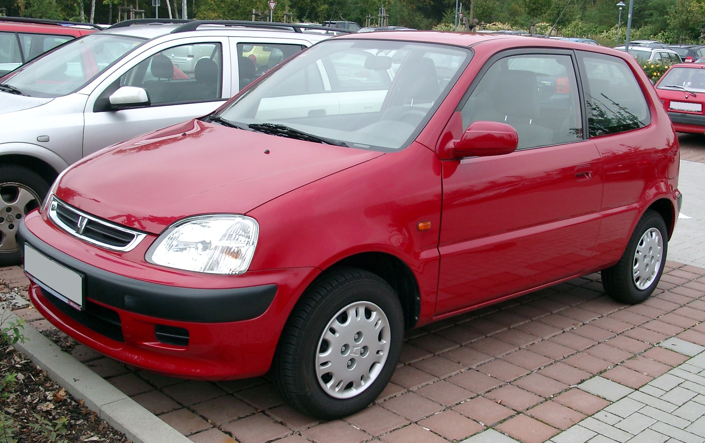
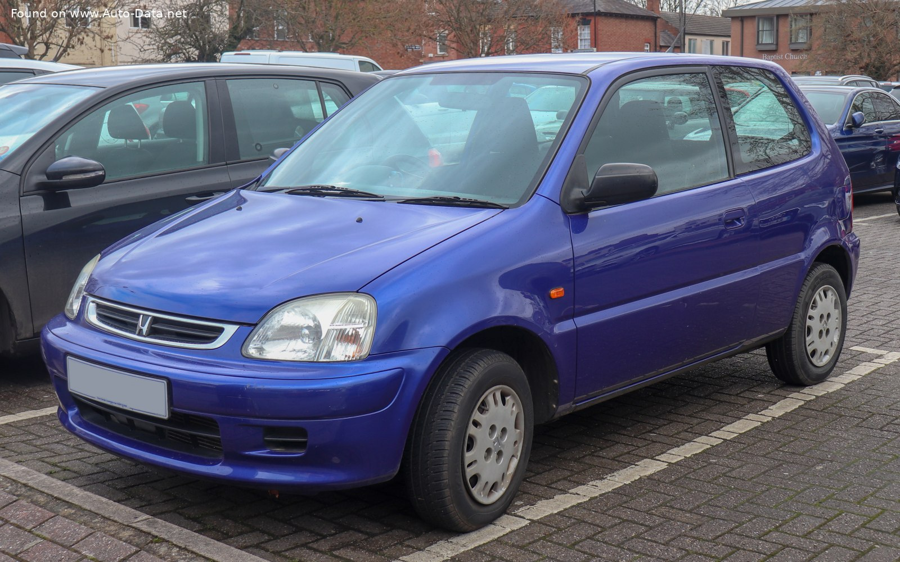

Honda Civic to produkowany od roku 1972 model niższej klasy średniej (segment C), będący następcą serii N360/N600 i Z360/Z600, najpierw, do szóstej generacji, jako subkompakt, a od roku 200 jako pełnoprawny kompakt. Honda Civic jest największym sukcesem rynkowym japońskiej marki – wyprodukowano go w liczbie 24 milionów egzemplarzy, co czyni go jednym z najlepiej sprzedających się aut w historii motoryzacji. Do dnia dzisiejszego wypuszczono dziesięć generacji modelu, z czego ostatnia pojawiła się w roku 2017 (wersja hatchback; odmiany sedan i coupe pojawiły się na rynku w 2016 roku). Samochód na całym świecie był laureatem dziesiątek nagród (m.in. Samochód Roku na pięciu kontynentach).
Zdjęcia samochodu marki Honda.
Geneza marki Honda sięga roku 1906, kiedy to na świat przyszedł Sōichirō Honda, który w dzieciństwie pomagał swojemu ojcu w naprawie rowerów. Jako 15-latek opuścił rodzinny dom i udał się na praktyki w warsztacie samochodowym w którym pracował przy budowie sportowego pojazdu Art Daimler. W 1927 roku otworzył własną filię warsztatu samochodowego pod nazwą Art Shokai. Dwa lata później opatentował metalowe szprychy. W 1930 roku założył fabrykę zajmującą się produkcją pierścieni tłokowych do małych silników, którą w 1945 roku sprzedał Toyocie. W 1947 roku Sōichirō Honda rozpoczął produkcję pierwszego roweru napędzanego silnikiem o pojemności 50 cm3, który stał się pierwszym produktem marki Honda. Rok później założone zostało przedsiębiorstwo „Honda Motor Co Ltd., a także rozpoczęto seryjną produkcję mopedów, które eksportowane były m.in. na Tajwan. Pierwszy motocykl wprowadzony został w 1949 roku. Był to model Dream D o pojemności 98 cm3.
 
{kind=link}
{kind=link}
{kind=link}